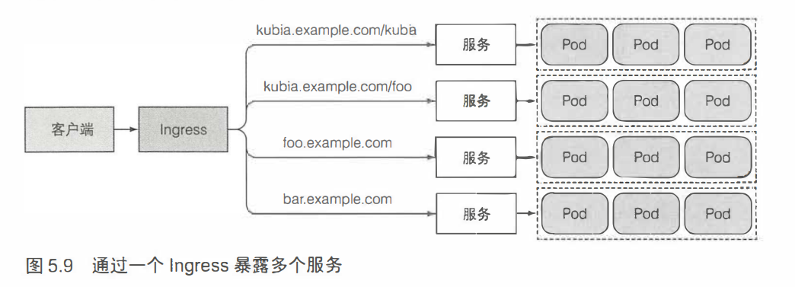

k8s学习(二)
k8s学习(二)
基于《Kubernetes in Action》
服务(service):
为一组功能相同的pod提供单一不变的接入点，即服务存在时，它的IP地址和端口不会改变。
一般我们还是采用yaml文件来创建服务，eg:
1 |
|
可以通过在一个已存在的pod中执行命令来进行测试
kubectl exec [pod_name] -- curl -s ip 指定节点执行curl命令
– ：表示kubectl命令项的结束
-s : 表示需连接不同的API服务器而不是默认的
在spec字段中指定 sessionAffinity: ClientIP 则所有请求会转化到同一个(即一开始确定的那个)
一个服务可以暴露多个端口，但必须给每个端口指定名字。
服务发现：
通过环境变量发现服务
当服务的创建早于pod的创建时，pod上的进程会根据环境变量获得服务的IP地址和端口号。
kubectl exec [pod_name] env获取环境变量FQDN(全限定域名)连接
进入节点bash后，如果知道服务名称，可以直接访问服务名(通过DNS解析域名)
ping 服务名或者其IP是ping不通的，因为服务的集群IP只是个虚拟IP，只在与服务端口结合时才有意义。
endpoint:
介于服务和pod之间的资源
当服务没有指定标签选择器时，就不知道包含哪些pod，则endpoint也不会被创建。所以对该类服务需要我们手动创建endpoint, name必须保持一致。
eg:
1 |
|
通过endpoint公开外部服务
同样我们也可以用FQDN访问外部服务：
创建ExternalName类型的外部服务：
1 |
|
服务暴露给外部客户端：
NodePort: 集群中每个节点都打开一个端口，使得不仅可以通过服务的内部集群访问NodePort服务，还可以通过任何节点的IP和预留节点端口访问NodePort服务。
创建eg:
1
2
3
4
5
6
7
8
9
10
11
12
13
14
apiVersion: v1
kind: Service
metadata:
name: kubia-nodeport
spec:
type: NodePort
ports:
- port: 80
targetPort: 8080 # 转发端口号
nodePort: 30123 # 互联网可以通过该集群上节点的ip:30123访问服务，不指定的化将随机分配一个端口
selector:
app: kubia
负载均衡器暴露服务：
负载均衡器拥有自己的可公开访问的ip地址，并将所有连接重定向到服务。所以可通过该ip来访问。
创建LoadBalance服务：
1
2
3
4
5
6
7
8
9
10
11
12
13
apiVersion: v1
kind: Service
metadata:
name: kubia-loadbalancer
spec:
type: LoadBalancer
ports:
- port: 80
targetPort: 8080
selector:
app: kubia
Ingress暴露服务：
根据HTTP请求的主机名和路径决定请求转发到的服务

k3s默认配置有ingress, 创建文件:
eg：
1
2
3
4
5
6
7
8
9
10
11
12
13
14
15
apiVersion: extensions/v1beta1
kind: Ingress
metadata:
name: kubia
spec:
rules:
- host: kubia.example.com
http:
paths:
- path: /
backend:
serviceName: kubia-nodeport
servicePort: 80
就绪探针：
也有三种类型：
Exec探针
HTTP GET探针
TCP socket探针
1 |
|
headless服务:
将spec->clusterIP属性设置为None，则服务变成headless服务。那么DNS服务器将返回属于该服务一部分的所有pod的ip。